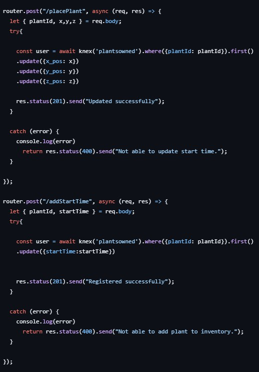
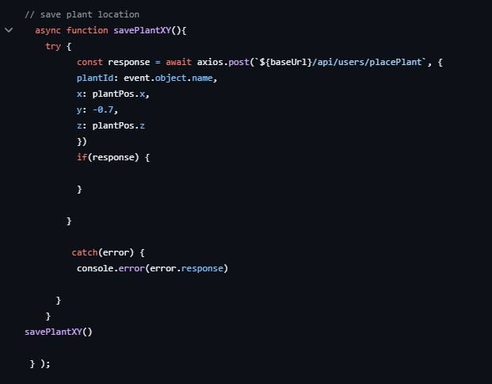
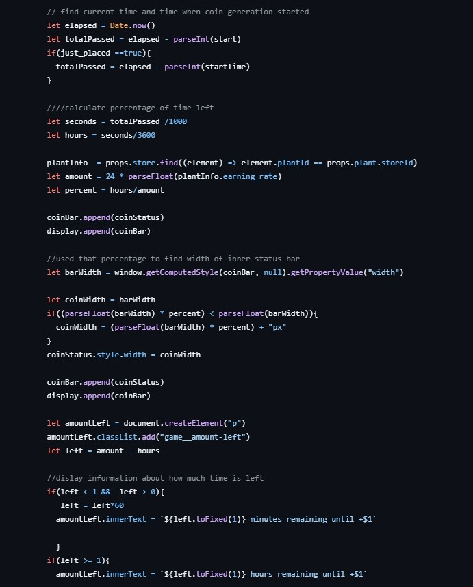
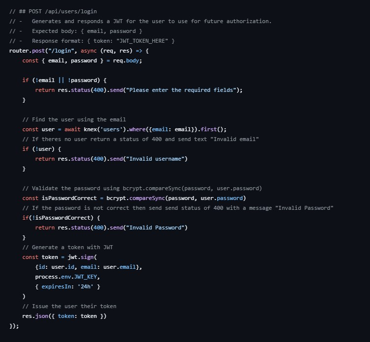
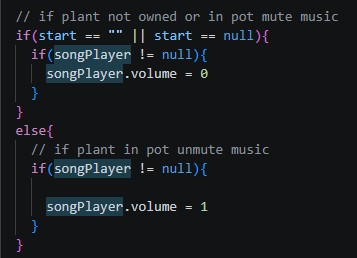

Embedded Song of Succulents Web game - fully playable above - please click login to start, can use username:test and password:test if you don't want to signup
Github Links
Github: Front End
Readme contains detailed information about endpoints, data, responses, game features, and project roadmap.
Github: Back End
Game Overview
Overview
The Song of Succulents is an idle game where players can build a 3D musical succulent garden. Place musical plants in your garden and earn points over time. Each plant plays a different part of one overall cohesive song. Some plants even dance along. Plants that are in the pot grow coins over time, and the user must press a button to collect them. New plants can be purchased from the store. Use username: test password: test to check it out without signing up, or create an account.
Credits
Nicolette Vere - Game programmer, artist, and designer, everything except writing the music.
Music by Roman Belov from Pixabay
Technical Information
Tech Stack
React, JavaScript, MySQL, Express, Three.js, Blender and Adobe Fresco for assets
Client libraries: react, react-router, axios
Server libraries: knex, express, bcrypt for password hashing
Technical Overview
I built The Song of Succulents as a full-stack web game using React on the frontend, Express and Knex on the backend, MySQL for data and game state persistence, and Three.js for the interactive game scene. Rather than treating it as a static browser game, I designed it as a persistent state driven system where each player's garden, plant placement, and coin generation data could be saved, restored, and updated across sessions.
To support data and game state persistence, I structured the backend around gameplay actions. The API stores and updates plant ownership, plant placement, user currency, and coin-generation timing through dedicated endpoints such as buying a plant, changing coin totals, updating plant position, and recording a generation start time. On login, the client requests the player's saved game state and rebuilds the garden from database data, including owned plants and their saved positions. This meant the frontend was reconstructing a personalized scene from server-side data.

For plant placement, I used Three.js to represent the garden spatially and let players move plants within the pot. When a player repositions a plant, the client captures its x, y, and z coordinates and sends them to the backend, where they are stored and later reloaded. That required connecting interaction logic in the frontend to persistent database updates so that scene layout remained consistent between sessions.

For the idle game economy, I used a timestamp based approach instead of relying on constant background simulation. Each plant stores a start time for coin generation, and the game uses elapsed time to determine when coins should become available. This let me create the feel of ongoing progression while keeping the system lightweight and easier to manage than a continuously running simulation

I also built the project with authentication and user specific data in mind. I implemented registration and login endpoints, used bcrypt for password hashing, and added JWT authentication so that player data could be securely associated with individual accounts. On the client side, authentication state affects what data is loaded, making the game experience personalized and since pot state and inventory is customizable.

One especially interesting parts of the project was designing the music behavior. Each plant contributes sound, and when plants are added or activated, their audio needs to work as part of a shared musical experience rather than as isolated sound effects. Even in the project planning stage, I treated this as a synchronization problem: the game needed to manage multiple plant sounds as part of one evolving composition. I did this by having all possible music parts always playing and unmuting and muting parts as plants were placed.
